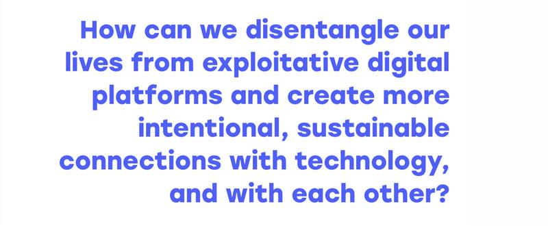

Photo: Arnaud Mesureur, Unsplash
ON SOURCE: THE CITIZENS ON SUBSTACK
Tech fascism is not inevitable: community is the alternative
Activist Alistair Alexander works on alternatives to a techno-authoritarian future - drawing inspiration from nature as a model for resilience.
Sabrina Provenzani
Feb 18, 2025 — 10 min read
“I feel that the more we’ve connected online, the more we’ve disconnected—not just from each other, but from the world around us. What people truly seek is deep connection with their surroundings. There is nothing more universal to all life, including humans, than witnessing other forms of life thrive. That is what unites us all. There is no greater joy than that”.
Alistair Alexander is a veteran activist based at the heart of Berlin’s vibrant tech justice community. While acutely aware of the complex economic and political dynamics that have led to the current power grab by the 'broligarchy,' he refuses to succumb to pessimism or defeatism. Instead, he actively works on alternatives to a techno-authoritarian future - drawing inspiration from nature as a model for resilience.
At The Citizens we have spent years warning, reporting on, and taking action against the harms of Big Tech, which places us ahead of the current curve. There are alternatives and hope, and we are committed to uncovering and sharing them. This brings me to your work - a unique blend of tech justice activism at the intersection of art, technology, and ecology. Tell me about it.
I've always been fascinated by technology, ever since the early days of the internet. Back then, technology was widely perceived as a liberatory force—almost utopian in its potential. I was in New York after 9/11, and during a World Social Forum protest, I met John Perry Barlow, one of the great architects of the internet as a movement. He authored A Declaration of the Independence of Cyberspace and co-founded the Electronic Frontier Foundation. I remember him calling Microsoft a 'fascist entity'—a strikingly strong statement at the time.
Later, I worked on a major public engagement project called The Glass Room, which we designed to look like an Apple Store but functioned as a pop-up art exhibition. We launched it in New York, London, and San Francisco. The space was sleek and minimalist, with glowing neon signs, but nothing was for sale. Instead, visitors explored art installations that examined their relationship with technology. At the time, the mainstream discourse was only just beginning to question whether it was a good idea for companies like Google and Facebook to wield so much power.
Then came the realization of technology’s environmental impact. We had been sold the idea that digital technologies were immaterial—floating weightlessly in the 'cloud.' But in reality, they are deeply embedded in physical infrastructure that consumes vast amounts of energy and resources. The internet is a key driver of climate change and carbon emissions—not just through its infrastructures, or the energy demands of AI, but through its role in accelerating consumerism and global supply chains, which fuel carbon-intensive economic processes.
Environmental activists, quite rightly, focus on the fossil fuel industry, as it is the primary source of emissions. But digital technologies play an equally significant role in sustaining these industries. And with the escalating energy demands of AI, Big Tech is increasingly reliant on Gulf oil states to support its infrastructure.
In your Substack newsletter reclaimed/systems, you describe what we are witnessing as 'technofascism.' You cite Joan Donovan - a member of our Real Facebook Oversight Board - who writes:
'When tech CEOs encode their political beliefs into the design of platforms, it’s a form of technofascism, where technology is used for political suppression of speech and to repress the organization of resistance to the state or capitalism.'
Can you expand on the nexus between politics and the unchecked power of Tech Bros in a lightly regulated landscape like the USA, particularly under a strongman leader like Trump, who faces a shell-shocked and fractured opposition?
I use the term technofascism because I'm a great admirer of Joan Donovan’s work. I've worked extensively on disinformation, and anyone in that field knows she is one of the most important researchers on the subject.
Right-wing authoritarianism inevitably leads to some form of fascism—a system that enforces hierarchies through political violence. While definitions of fascism are fluid, for me it’s a fusion of state capital and military power. That's the core defining characteristic, with an ethos of spiritual national violence.
When we look at Silicon Valley oligarchs, we see a deep alignment with Trump. In his first term, Trump lacked full control over capital and the military, which often left him politically impotent, so in my mind he wasn't fully a fascist leader. But Silicon Valley provided an opening - giving him influence over one of the most powerful sectors of the American and global economy. Now, the ethos emerging from that alliance has profoundly fascistic elements: the criminalization and deportation of migrants, the push for AI-driven militarism, and the embrace of ideas rooted in eugenics.
Musk talks about the birth rate, he talks about immigration. These are very racially based ideas of stratification. So there's a profoundly fascistic element here.
Peter Thiel from Palantir is probably the archetypal techno authoritarian; Alex Karp is a really interesting and sinister character, very chauvinistic in his views. He talks regularly about American superiority, about creating huge waves of military AI that you can see used in Gaza, in Ukraine and in all sorts of conflicts. The USA alone is spending $400 billion this year on AI infrastructure - The costs are immense, but the revenues are just not coming in.
Then DeepSeek happened—a Chinese AI alternative that costs a fraction, has a much lower environmental impact, and debunks the myth that only massively capitalized private companies can lead AI development.
Yes, and before that, cracks in the AI hype were already appearing. Late last year, experts began acknowledging that training these models was yielding diminishing returns—AI was not improving at the rate promised. DeepSeek has demonstrated dramatic computational efficiencies, matching leading U.S. models while using vastly fewer resources—and doing so as an open-source project.
Silicon Valley's AI business model revolves around moats—creating insurmountable barriers to entry. Then they become 'too big to fail” - there are suspicions that they have been buying up infrastructure to secure an artificial monopoly.
Ah, yes, because they believe in the free market, don’t they?
Oh, yeah, absolutely. But DeepSeek really drives a hole in that and it opens up the possibility that other people can do the same things. It blows apart a lot of that business model in a lot of ways. Because if they turn around and said, oh, wait a minute, this means, oh, maybe we shouldn't be investing all this money in data centers, there would literally be a global economic crisis. On the contrary, the really profound insight here is that when you put fundamental constraints on technology, it doesn't stop innovation, it increases it. It makes people think about things more creatively and find new solutions, as DeepSeek did.
The deeper lesson is that imposing constraints on technology doesn’t hinder innovation—it stimulates it. Constraints force people to think more creatively, as DeepSeek has shown. Our current tech paradigm is about using more energy and more resources to do morethings. But if we are to address our climate crisis—where energy and resources are already scarce—we must reverse this polarity. Instead of asking, how can we build bigger and faster? we should be asking, what do we actually need? and how can we achieve it with the least possible energy and resources?
Your work also explores AI’s role in climate solutions. You co-authored a paper on AI & Digital Pathways to Net Zero+. Could you guide us through the options explored?
This is a design research project I’m working on with Dr. Joanna Bernhardt, a highly respected designer specializing in what she calls ecological literacy. We use visualizations to explore environmental impact in new ways. There's an awful lot around sustainable computing and that's been growing as an area, a community, a network over the last few years. An awful lot of that is around things like green coding and you know, trying to create low-carbon websites or looking at efficient software. Ultimately it is not simply about the energy use, it's also about the embodied carbon in these infrastructures.
GPUs, which power AI, are incredibly carbon-intensive to manufacture. The more advanced the chips, the more energy they consume. So you can't make a green Internet, you just can't do it. It's always going to have a carbon impact.
Care for life, care for the chips: the future is re-used, recycled and permacomputing
Aware of that, we outline four possible futures:
- Extractive – business as usual.
- Sustainable – reducing harm, which is where most current climate discussions focus.
- Restorative – actively repairing ecological damage.
- Regenerative – not just lowering carbon footprints but scaling back and rebuilding ecosystems at a planetary level.
This is the ultimate goal: creating activities and structures and processes involved in the wholesale replenishment of our entire biosystem. It’s where we're not just simply reducing our carbon, but we're actually scaling it back and really starting to repair at a planetary scale our entire biosystem. Which of these technologies do we actually really need, which do we want, which are actually doing us good and which can we leave behind?
Because when you look at the technologies around us, a huge amount of them are incredibly harmful and are not doing us any good in any shape or form.
I feel that the more we've connected online, the more we've disconnected not just from each other, but from the world around us. What people really want actually is a deep connection with the world around us. There's nothing more universal to, to all life but humans than seeing other forms of life thrive. That's what we make us all. You know, there's nothing that gives us more joy than that.
You draw fascinating parallels between humanity and fungi. Can you explain the lessons here and how activists can take advantage of natural ecosystems, both symbolically and materially?
I've developed a deep interest in the network of trees and the intelligence embedded in old-growth forests. A significant part of that intelligence comes from fungi, which function as an information network, facilitating communication between trees. Their role is to distribute nutrients where they’re needed, ensuring that different trees receive what they require to thrive. Fungi also possess the ability to regulate growth—not striving for maximum size but rather for optimal balance within the ecosystem. They scale back rather than overwhelm the flora and fauna around them. They are fundamentally social beings, working in harmony with the world around them, which is a lesson we can draw from.
There is increasing evidence that much of the soil in the Amazon rainforest basin was enriched by human intervention—ash mixed with water to make it incredibly fertile, in contrast to the region’s naturally barren soil. This suggests that, over millennia, various cultures co-created the Amazon, shaping it into the thriving ecosystem we know today. It's extraordinary. Now we have Musk going on about a mission to Mars… Wait a minute, why can't we create another Amazon that's a vastly more advanced and sophisticated and exciting and inspirational project?
When we put our minds to it, humans have the potential to be extraordinarily beneficial to their environment. We need to get back to that mindset as soon as possible.
You are launching a five-week workshop, Ecologies of technology: tools to disconnect/reconnect, aimed at answering the question: “How do we deal with this? What do we do?”. These are questions people are asking more and more.
Yes, I want to introduce people to three levels of action and engagement.
A lot of activists believe that individual action is meaningless, but I think the personal level is crucial—it builds resilience and strengthens our alignment with our values. The next level is community, where we work with friends and local networks to drive change. And then there’s the systemic level, where we engage in collective campaigns—like what The Citizens do.
It’s important to work across all three levels simultaneously. It creates a sense of purpose and belonging, making us feel embedded in something meaningful, even infectious.
We can’t just abandon technology and retreat to caves—that’s not a realistic solution for most people. But we can transition to better, safer technologies. The infrastructure we currently rely on is often hostile to us and the people we care about. Finding alternatives won’t be easy, but we’re reaching a point where enough people recognize that making the effort is necessary. We can see where this trajectory leads, and many are ready to push back—reducing their reliance on harmful systems and rediscovering the joy of analog life.
In my workshops, I'll focus on intentional analog practices, helping people explore alternative ways of doing things. The goal isn’t necessarily to eliminate digital tools but to reclaim a sense of agency—to know that we don’t need them and can walk away if necessary. That shift in mindset gives us more power over our relationship with technology, countering our sense of dependency on digital.

The workshop will be a co-creative process, where we work together toward a healthier relationship with technology. It’s about aligning our tech choices with what truly matters to us- be it the ecosystem, be it wider society, where you put together individuals, and they work as a collective.